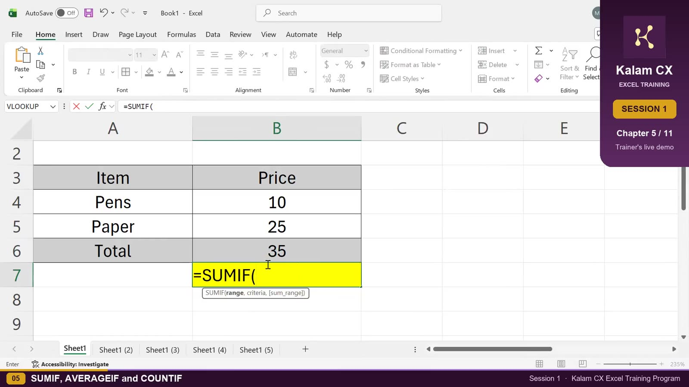

Kalam CX Excel Academy
Excel.
Built for the floor.
Real call-center data. A real WFM trainer. Three sessions that take you from reading an export to presenting a dashboard.

Everything you need.
Nothing you don't.
14videos with the trainer's own voice
2.8hours of real Excel on screen
54test questions, marked instantly
20hands-on final exam tasks
Three sessions. One skill set.
How it works.
1
Watch
Start with the quick video, then the trainer's chapters.
2
Practise
Repeat every step yourself in the Activities Workbook.
3
Test
Take the session test. Your progress stays in this browser.
4
Prove it
Finish with 20 real tasks in the final exam.
Final exam
Prove it.
Twenty hands-on tasks on the same workbook you practised with. Sixty minutes. Pass with sixteen.
Session 1
Reading Data, Functions & Time
Find the header row, pick the right function, and turn raw dates and times into answers.
What you'll be able to do.
Read an export
Header row, data range and column types.
The Big Five
SUM, AVERAGE, COUNT, MAX and MIN.
Add conditions
COUNTIF(S), SUMIF(S), AVERAGEIF(S), MAXIFS.
Lock references
Relative vs absolute, with $ and F4.
Dates & times
YEAR, MONTH, WEEKDAY, WEEKNUM and FLOOR intervals.
Practise
Do it yourself in Excel.
Open the Activities Workbook and work through tabs S1_Basics, S2_Formulas while the video is fresh.
Download the workbookReview
Keep the slides.
Every slide from this session in one PDF, with a printable copy of the test.
Open the slides Printable testSession 1 test
Check what stuck.
18 questions. Pass mark 14. Each answer is marked instantly, with the reason.
0
Session 2
Errors, Logic, Lookups & Cleaning
Fix every error message, write decisions with IF, look values up and clean a messy export.
What you'll be able to do.
Read the errors
#DIV/0!, #REF!, #VALUE!, #NAME? and #N/A.
Decide with logic
IF, nested IF, AND, OR and IFERROR.
Look it up
VLOOKUP, HLOOKUP and XLOOKUP.
Clean the export
Remove Duplicates, TRIM, PROPER, Text to Columns.
Split IDs
LEFT, RIGHT, MID, VALUE and Data Validation.
Practise
Do it yourself in Excel.
Open the Activities Workbook and work through tabs S3_Logic_Lookup, S4_Cleaning while the video is fresh.
Download the workbookReview
Keep the slides.
Every slide from this session in one PDF, with a printable copy of the test.
Open the slides Printable testSession 2 test
Check what stuck.
18 questions. Pass mark 14. Each answer is marked instantly, with the reason.
0
Session 3
PivotTables, Charts & Dashboard
Turn a question into a PivotTable, choose the right chart, and present a one-page dashboard.
What you'll be able to do.
Think in a Pivot
Rows, Columns, Values and Filters.
Refresh & group
Alt+F5, group by month, % of Grand Total.
Avoid the trap
Average of averages vs true AHT.
Chart the message
The right chart with a title that says the point.
Present it
A one-page dashboard in five minutes.
Practise
Do it yourself in Excel.
Open the Activities Workbook and work through tabs S5_Pivot, S6_Dashboard while the video is fresh.
Download the workbookReview
Keep the slides.
Every slide from this session in one PDF, with a printable copy of the test.
Open the slides Printable testSession 3 test
Check what stuck.
18 questions. Pass mark 14. Each answer is marked instantly, with the reason.
0
Final exam
Prove it.
Open the Activities Workbook, build every answer in Excel, then reveal the key. 60 minutes · pass mark 16 / 20.
Open your copy of Activities Workbook .xlsx and build every answer in Excel. Write the formula you used and the result. Time: 60 minutes. Pass mark: 16 / 20 tasks correct. The answer key is in Part 2: check it only after you finish.
A. Reading & formulas (tab S1_Basics / S2_Formulas)
- In the Weekly Attendance Export (S1_Basics Part B), write the header row number, the data range and the type of each column.
- Hours worked for Dina Gamal (18:14 → 03:20). Show the formula.
- Total calls offered by the team (S2_Formulas Part B, rows 53-72).
- Longest AHT in the team.
- Lowest Service Level %.
- For how many agents is a Service Level recorded?
- True team AHT = total THT / total calls answered (to 1 decimal).
- How many Team A agents work the 18:00 - 03:00 shift? (COUNTIFS on the Agents tab)
B. Logic & lookups (tab S3_Logic_Lookup)
- Look up the shift for Login IDs 21003, 99001 and 21018, showing "Not Available" when the ID is missing.
- Build the Dynamic Status Field for all 20 agents (Team → SL Target → nested IF). How many agents are Excellent, On Target and Below Target?
- Risk band for Rana Ashraf (Aban 4.8%): High > 5%, Medium > 3%, else Low.
C. Cleaning (tab S4_Cleaning)
- Convert the text "15-03-2026" into a real date and show it as a long date.
- Split "Mahmoud Saeed 21010" into Login ID (number) and Name.
- Data Cleanup Lab: how many rows remain after Remove Duplicates, and what is the new Calls Offered total?
D. PivotTables (tab S5_Pivot)
- PivotTable: Team in Rows, Shift in Columns, Sum of Calls Answered. Write the Grand Total and Team C's total.
- Group Week Start by month. Which month has the largest share, and why is that comparison not fair?
- Average of AHT by team vs true AHT by team: write both for Team B.
E. Dashboard (tab S6_Dashboard)
- The three KPI numbers: Total Calls Answered, team AHT, Agents Below Target.
- Which agents turn RED on Aban % (> 5%) but are still Excellent or On Target on Service Level?
- Write your 5-minute presentation headline using the template: "This week the team answered ___ calls at ___ seconds average handling time; ___ agents are below target."
| # | Answer | Formula / method |
|---|---|---|
| 1 | Header = row 31; data range A32:F51 (20 agents); types: number, text, text, time, time, number | Title rows 28-29 and the footer in row 52 are not data. Shift is TEXT (the dash). |
| 2 | 9.10 hours | =MOD(C24-B24,1)*24 |
| 3 | 10,381 | =SUM(C53:C72) |
| 4 | 196.9 s (Sherif Mounir) | =MAX(G53:G72) |
| 5 | 69.4% (Salma Reda) | =MIN(H53:H72) |
| 6 | 18 | =COUNT(H53:H72), 2 new joiners are blank |
| 7 | 168.3 s | =SUM(F53:F72)/SUM(D53:D72) (the plain average of the AHT column is 169.4) |
| 8 | 2 (Dina Gamal, Bassem Ragab) | =COUNTIFS(Agents!C:C,"Team A",Agents!E:E,"18:00 - 03:00") |
| 9 | 21003 → 09:00 - 18:00; 99001 → Not Available; 21018 → 18:00 - 03:00 | =XLOOKUP(A23,Agents!A:A,Agents!E:E,"Not Available") |
| 10 | Excellent 4, On Target 6, Below Target 10 | =IF(D34>=F34+0.1,"Excellent",IF(D34>=F34,"On Target","Below Target")) |
| 11 | Medium | =IF(B18>0.05,"High",IF(B18>0.03,"Medium","Low")) |
| 12 | Sunday, 15 March 2026 | =DATE(RIGHT(A28,4),MID(A28,4,2),LEFT(A28,2)) then Long Date |
| 13 | 21010 and "Mahmoud Saeed" | =VALUE(RIGHT(A36,5)) and =LEFT(A36,LEN(A36)-6) |
| 14 | 32 rows; Calls Offered 17,072 (was 21,089) | Data > Remove Duplicates, all columns |
| 15 | Grand Total 121,099; Team C 37,025 | Pivot: Rows Team, Columns Shift, Values Sum of Calls Answered |
| 16 | August 2026 (42.0%); it contains 5 week-start dates vs 4 in July and 3 in September | Group > Months; Show Values As % of Grand Total |
| 17 | Team B: average of AHT 171.0 vs true AHT 170.6 | Sum THT / Sum Calls Answered, or a Calculated Field |
| 18 | 121,099 calls; 168.5 s; 10 agents below target | =SUM(E12:E31); =SUM(H12:H31)/SUM(E12:E31); =COUNTIF(L12:L31,"Below Target") |
| 19 | Karim Adel and Hossam Ali (Excellent), Mariam Sobhy (On Target) | Aban % 6.8%, 6.3% and 7.3% with SL above target |
| 20 | "This week the team answered 121,099 calls at 168.5 seconds average handling time; 10 agents are below target." | Participant Guide 6.4 template |
Library
Guides and practice files.
Practice files
XLSXActivities WorkbookUsed in every session and the final exam.Download XLSXEasy to advancedExtra drills by level.Download XLSXLookups & textVLOOKUP, XLOOKUP, LEFT, MID, TRIM.Download
Guides
PDFParticipant GuideEverything in one handbook.Open PDFCourse mapWhere each topic lives.Open PDFTraining brochureThe program at a glance.Open PDFAll slide decksSessions 1 to 6 in one file.Open PDFWorkbook answer keyEvery task, solved.Open PDFPractice answersExtra drills, solved.Open PDFThe trainer's live filesWhat was built on screen.Open PDFPro tipsShortcuts and habits that save hours.Open PDFSession notesTimestamps for every topic.Open